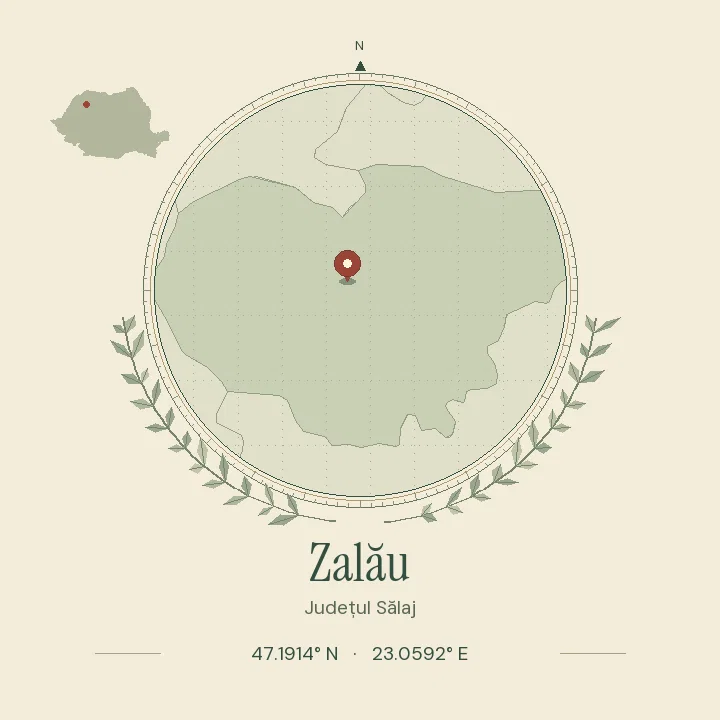
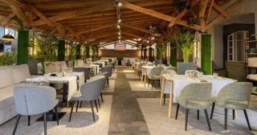
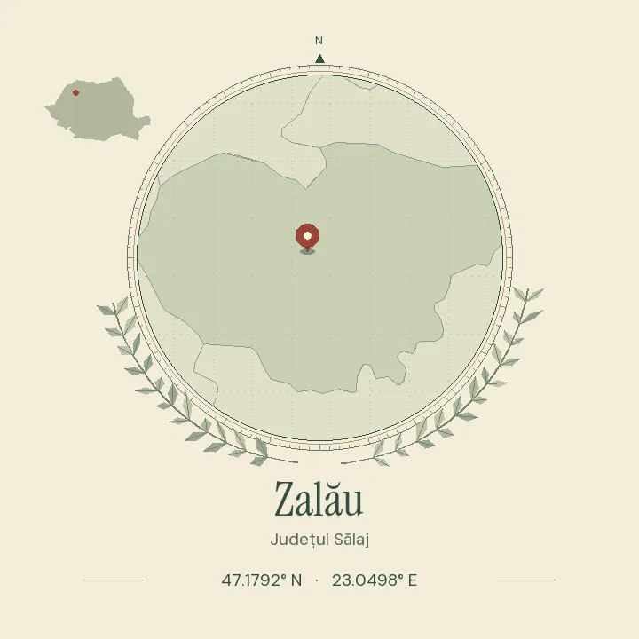

Locații de nuntă în Zalău
- locații în director
- 5
- cu cazare în registrul SITUR
- 1
- medie ponderată Google
- 4,3 / 5
- evaluări Google
- 1.803
Cum alegi o locație în Zalău
În Zalău poți începe comparația cu Crama Dacilor SRL, crama Sălaj crama Zalău coniac cognac vinars spumant șampanie (cramă), Hotel Brilliant Meseș (hotel), Grand Hotel Baroc (hotel). Aceste proprietăți apar în primele poziții când luăm în calcul împreună nota și numărul de evaluări Google. Salvează adresele care vă interesează pentru a le așeza apoi alături în fișa de comparare a ofertelor.
În fișele proprietăților poți compara dotări concrete la Hotel Brilliant Meseș (grădină, terasă, cazare), Grand Hotel Baroc (terasă, cazare, parcare gratuită). Pentru oferta de nuntă, întreabă ce spații și servicii dintre cele prezentate intră în rezervarea privată pentru data voastră.
Dacă vin rude de departe, Pensiunea La Grădina are o unitate de cazare asociată în registrul SITUR. Înregistrarea pentru La Gradina cuprinde 28 de locuri de dormit în 12 spații de cazare. Întreabă câte camere pot fi păstrate pentru aceeași noapte înainte să trimiți invitaților detaliile de rezervare.
Dacă vrei să vezi două proprietăți în aceeași zi, poți continua de la Crama Dacilor SRL, crama Sălaj crama Zalău coniac cognac vinars spumant șampanie spre Ansamblul castelului Wesselényi din Jibou. Punctele lor sunt la 16,7 km în linie dreaptă. Deschide traseul înainte să fixezi ora celei de-a doua vizite, mai ales dacă grupul se deplasează cu autocarul.
Locații pentru vizionare
Ordinea ține cont de nota Google și de numărul evaluărilor. Cum calculăm ordinea

Hartă ilustrată Zalău · Cramă
Crama Dacilor SRL, crama Sălaj crama Zalău coniac cognac vinars spumant șampanie
Crama Dacilor SRL, crama Sălaj crama Zalău coniac cognac vinars spumant șampanie figurează ca cramă în Zalău, Sălaj, la adresa Aleea Astrei 1.
Aleea Astrei 1, 450083 Zalău+40 740 402 335
Fotografie a locației · Sursa fotografiei Zalău · Hotel
Hotel Brilliant Meseș
Hotel Brilliant Meseș, Zalău. Este o referință pentru combinația dintre masă și cazare la aceeași adresă din Zalău.
Piața 1 Decembrie 1918 10A, 450041 Zalău+40 722 102 711
Fotografie a locației · Sursa fotografiei Zalău · Hotel
Grand Hotel Baroc
Hotel baroc în Zalău cu sală de evenimente lăudată de invitații la nunți, piscină interioară și terasă; muzica se aude până în camere.
Bulevardul Mihai Viteazul nr 119, 457105 Zalău+40 744 150 911
Hartă ilustrată Zalău · Hotel
Hotel Royal
O persoană cazată la Hotel Royal din Zalău povestește că a auzit zgomot de pe terasă până târziu și că geamurile camerei sale nu aveau plasă pentru insecte.
Strada Cetinei, Aleea Dealului 12, 450066 Zalău+40 260 606 061
Hartă ilustrată Zalău · Hotel
Pensiunea La Grădina
Pensiunea La Grădina, Zalău. Un oaspete de la La Grădina din Zalău menționează că avea la dispoziție un frigider comun pe etaj.
Strada George Coșbuc 1C, 457246 Zalău+40 745 005 815
Întrebări despre locațiile din Zalău
Unde pot dormi invitații în Zalău?
În registrul de cazare SITUR găsim Pensiunea La Grădina (28 de locuri de cazare). Verifică ce camere sunt libere pentru noaptea evenimentului.
Ce proprietăți din Zalău au grădină sau terasă?
Hotel Brilliant Meseș (grădină, terasă); Grand Hotel Baroc (terasă). Cere administratorului condițiile de folosire pentru o petrecere privată.
Care locație din Zalău are cele mai multe evaluări Google?
Hotel Brilliant Meseș are 846 de evaluări în profilul Google folosit la documentare. Evaluările acoperă și alte experiențe la proprietate, inclusiv vizitele fără eveniment.
Ce alte localități pot include într-o vizionare lângă Zalău?
Cele mai apropiate adrese comparate pe hartă sunt în Jibou, Șimleu Silvaniei, Lompirt. Găsești mai jos distanțele dintre proprietățile folosite pentru această comparație.
Vizionări în apropiere
- Jibou · 1 locație. Între Crama Dacilor SRL, crama Sălaj crama Zalău coniac cognac vinars spumant șampanie și Ansamblul castelului Wesselényi sunt 16,7 km în linie dreaptă.
- Șimleu Silvaniei · 1 locație. Între Grand Hotel Baroc și Cabana Brădet sunt 19,2 km în linie dreaptă.
- Lompirt · 1 locație. Între Grand Hotel Baroc și Pensiunea Silvania sunt 19,3 km în linie dreaptă.